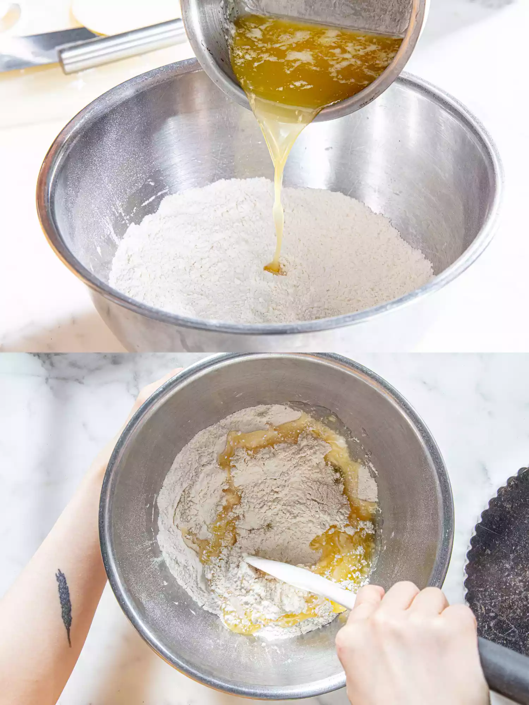
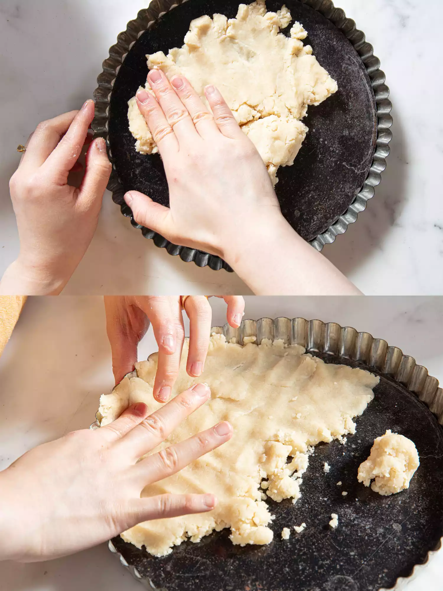
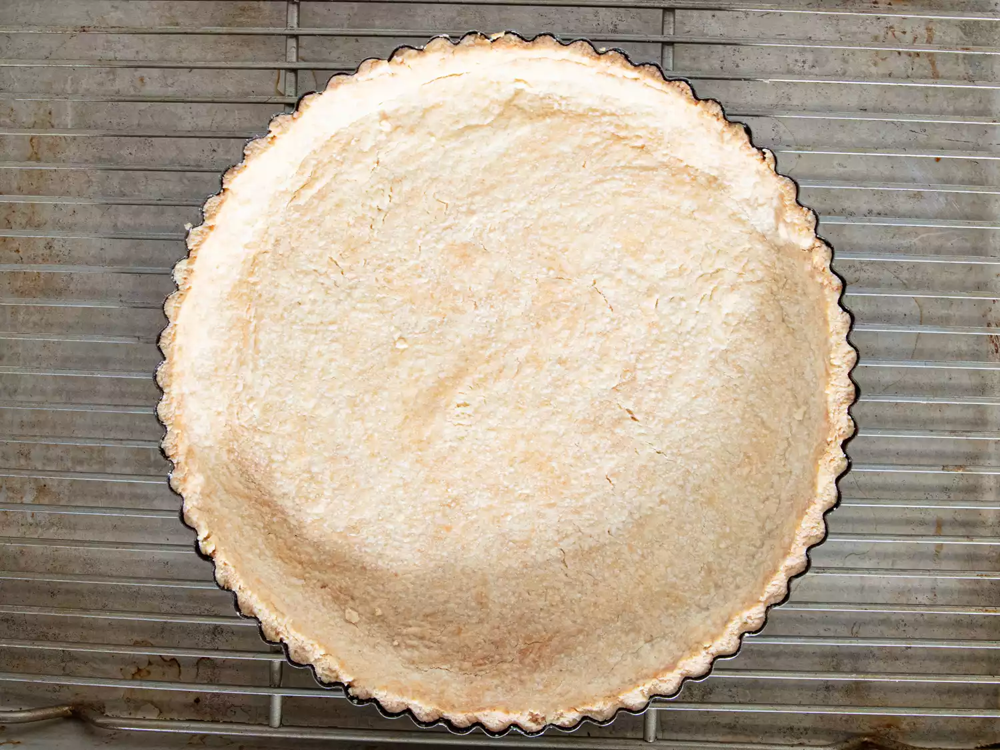
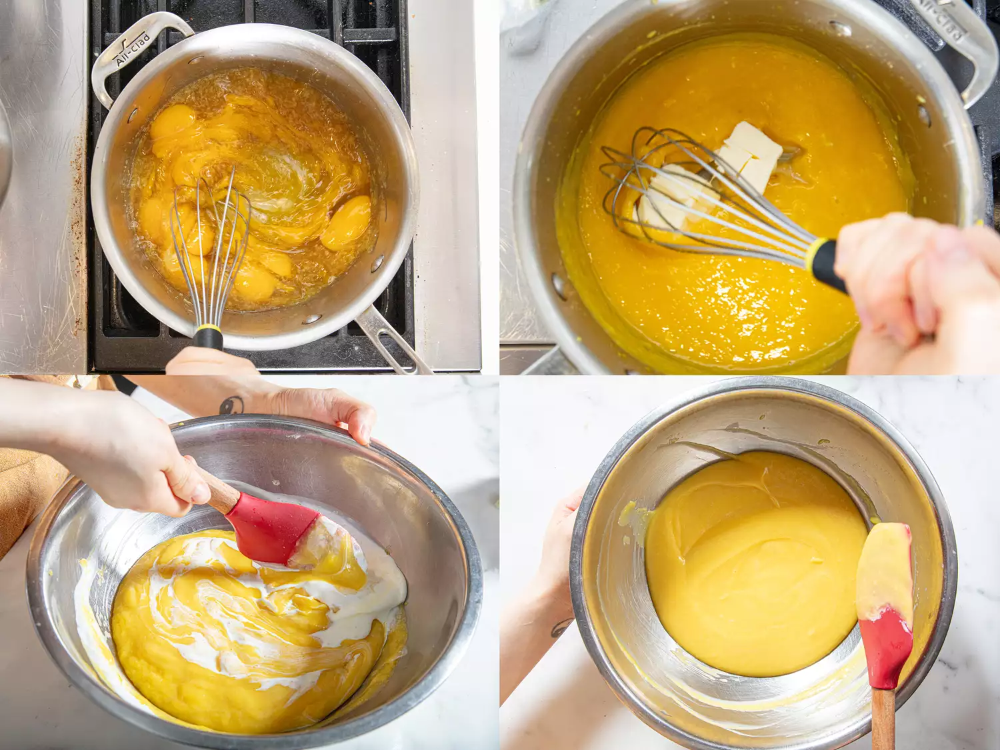
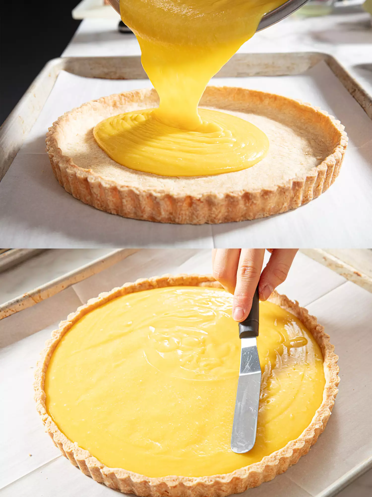

Trở về trang chủ
Công thức bánh tart chanh vàng
Công thức của web serious eats
Nguyên liệu vỏ bánh
- 1 1/2 cốc ( 6 2/3 ounce ; 190 g ) bột mì đa dụng
- 1/4 cốc ( 1 3/4 ounce ; 50 g ) đường cát
-
1/4 thìa cà phê muối kosher Diamond Crystal (đối với muối ăn, dùng một
nửa lượng theo thể tích)
- 8 thìa canh ( 113 g ) bơ nhạt , đun chảy và để nguội bớt
- 2 muỗng canh ( 30 ml ) nước
Nguyên liệu nhân bánh
- 3 quả trứng lớn nguyên quả cộng với 6 lòng đỏ trứng lớn
- 1/2 cốc ( 120 ml ) mật ong
-
1/4 cốc vỏ chanh vàng bào cộng với 3/4 cốc nước cốt ( 4 quả chanh vàng
nguyên quả )
-
1/4 thìa cà phê muối kosher Diamond Crystal (đối với muối ăn, dùng một
nửa lượng theo thể tích)
- 4 muỗng canh ( 113 g ) bơ nhạt , cắt thành từng miếng ½ inch
-
3 thìa kem đặc(Nếu bạn không có sẵn kem tươi, bạn có thể bỏ qua và
thay thế bằng 2 thìa bơ.)
Hướng dẫn vỏ bánh
-
Chỉnh giá nướng ở giữa lò và làm nóng lò ở 350℉. Trong một tô lớn,
trộn đều bột mì, đường và muối. Đổ bơ và nước vào hỗn hợp bột mì, dùng
thìa mềm trộn đều cho đến khi hòa quyện và tạo thành khối bột đồng
nhất.

-
Dùng tay véo và dàn đều ba phần tư khối bột lên đáy khuôn bánh tart 9
inch (23cm) có đáy rời. Dùng tay và thìa gạt bột hoặc đáy cốc đong
lớn, ấn bột xuống đáy khuôn cho đến khi bột dày đều. Chia phần bột còn
lại thành từng miếng nhỏ hơn và rải đều xung quanh mép khuôn, sau đó
dùng ngón tay ấn bột vào thành khuôn có rãnh. Ấn bột cho đến khi bột
phủ kín hoàn toàn thành khuôn.

-
Đặt khuôn đã lót bột lên giá nướng, đặt trong khay nướng có viền và
nướng cho đến khi vỏ bánh có màu vàng nâu nhạt và cứng khi chạm vào,
khoảng 25 đến 35 phút, xoay khuôn sau khi nướng được một nửa thời
gian. Để sang một bên cho đến khi sẵn sàng để đổ nhân bánh. (Vỏ bánh
đã nguội có thể được bọc lỏng bằng màng bọc thực phẩm và bảo quản ở
nhiệt độ phòng tối đa 24 giờ.)

Hướng dẫn nhân bánh
-
Đánh đều trứng, lòng đỏ trứng, mật ong, vỏ chanh, nước cốt chanh và
muối trong một chiếc chảo cỡ vừa cho đến khi mịn. Đun trên lửa vừa
nhỏ, khuấy liên tục bằng thìa cao su, cho đến khi hỗn hợp hơi sệt lại
và đạt 165°F (71°C), trong khoảng 5 đến 7 phút. Tắt bếp, cho bơ vào
đánh tan. Lọc hỗn hợp chanh qua rây lọc lưới mịn đặt trên bát, sau đó
nhẹ nhàng khuấy kem tươi vào hỗn hợp đã lọc bằng thìa cao su.

-
Đổ sốt chanh dây ấm lên vỏ bánh đã nướng. Nướng cho đến khi nhân bánh
bóng, mờ đục và phần giữa hơi rung khi lắc, khoảng 10 đến 12 phút, đảo
bánh sau khi nướng được một nửa thời gian. Để nguội trên giá dây ở
nhiệt độ phòng, ít nhất 1 giờ.
